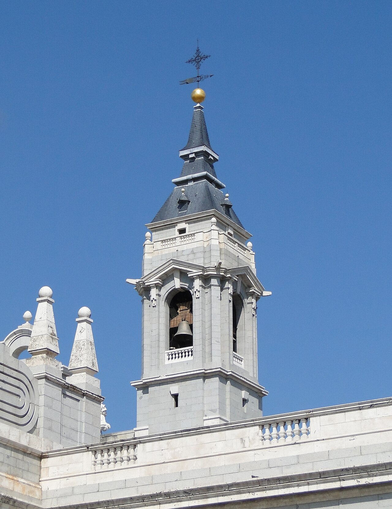
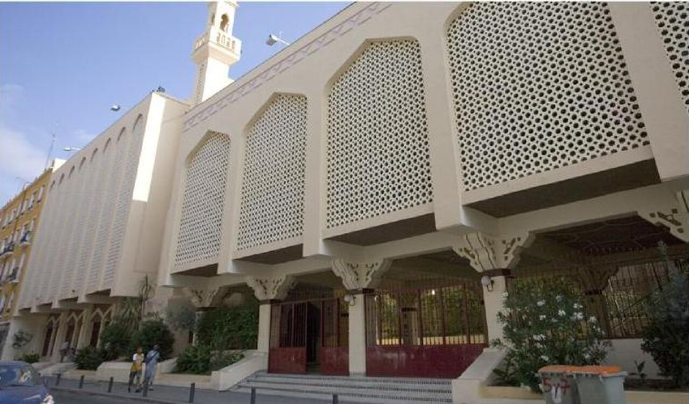
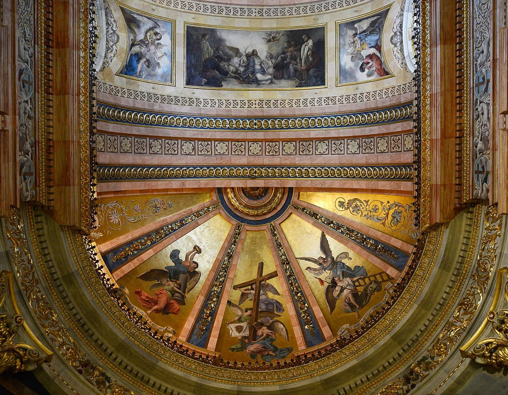
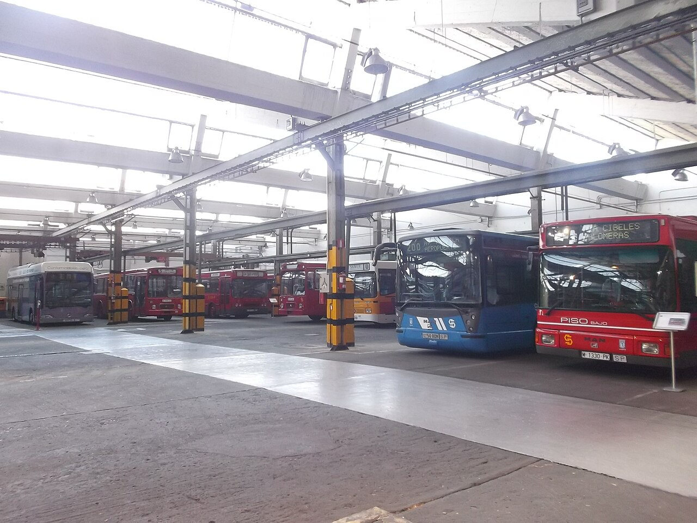
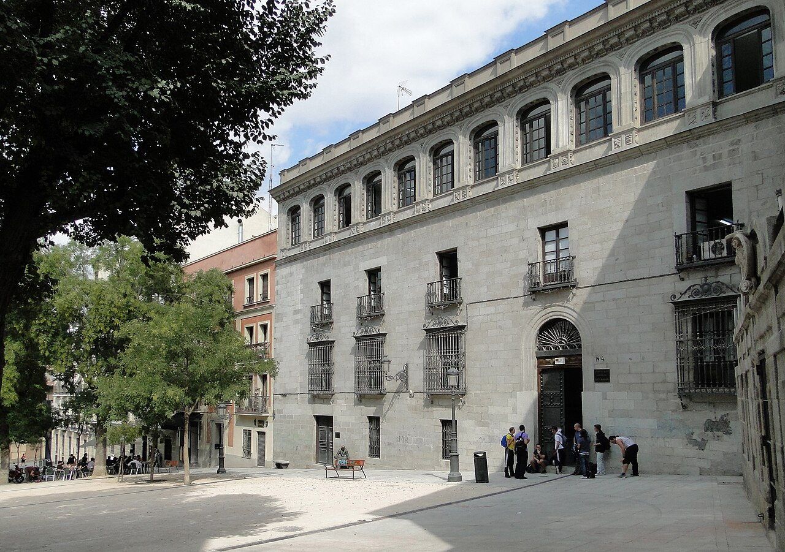

Исторические и справочные гербы


Madrid
Путеводитель. Объектов в этом выпуске: 38.
OTIUM — практика нарочитого досуга. В античном смысле otium — не побег от работы, а время, когда внимание возвращается к памяти, пейзажу и мысли — без прикладного дедлайна.
Мы выстраиваем маршруты для неспешного присутствия, а не для чек-листа достопримечательностей: важно быть в месте, а не «потреблять» виды.
OTIUM — не туроператор. Это приглашение пройтись, остановиться и оставить маршрут незавершённым, если свет на фасаде заслуживает ещё минуты.
Исторические и справочные гербы
Путеводитель. Объектов в этом выпуске: 38.
Мадрид — столица Испании и политический центр королевства на высокогорном плато.
От крепости к резиденции дворов Габсбургов и Бурбонов: музеи Прадо, Рейна София и Тиссен-Борнемисца, королевские дворцы и бульвары. Мадрид — столица футбола, ночной жизни и современного искусства.
Гражданская война сделала Мадрид символом республиканской обороны; франкистская эпоха и демократия после 1975 года расширили столицу. Евро и интеграция в ЕС укрепили экономику; Мадрид — узел высокоскоростных дорог и культуры всей Испании.
Catedral de la Almudena

Modern neo-Romanesque and neo-Gothic cathedral consecrated in 1993 after a long hiatus.
Plans dragged from the 16th century through civil wars and Franco era.
Crypt tours and colourful interior ceilings surprise first-time visitors.
Almudena Cathedral 02.jpg

CaixaForum

CaixaForum Madrid — культурный центр, открытый в 2006 году на месте бывшего завода компании Caixanova. Центр объединяет музей современного искусства, выставочные залы и библиотеку, став важной частью культурной жизни города.
Это место идеально подходит для знакомства с современными испанскими и международными арт-проектами.
Museo Cerralbo

Касерос-де-Сьерра-де-ла-Керральба, именуемый также Музеем Касероса де ла Керральба или Музеем Керальбо, расположен в историческом дворце XVIII века, построенном для маркиза де Кастельон и принадлежавшем семье графов де Касерес. В настоящее время музей носит имя герцогини де Сьерра-де-ла-Керральба, жены короля Альфонсо XIII, которая способствовала открытию музея после Второй мировой войны.
Музей привлекает внимание ценителей искусства благодаря уникальной коллекции произведений живописи, графики и декоративно-прикладного искусства испанского золотого века.
Fuente de Cibeles

Фонтан Сибелес расположен в центре Мадрида и является одной из главных достопримечательностей испанской столицы. Построенный в 1904–1915 годах архитектором Рамоном Монтанером, фонтан изначально задумывался как символ величия города и власти Испании. Статуя богини правосудия, окружённая фигурами времён года, стала визитной карточкой Мадрида и символом справедливости и процветания.
Фонтан Сибелес привлекает туристов своей красотой и историческим значением, символизируя мощь и культурное наследие Мадрида.
Palacio de Cristal, Parque del Retiro

Iron-and-glass pavilion beside a small lake—Victorian engineering transplanted to Madrid gardening.
Built for the 1887 Philippines Exposition; now hosts temporary art installs.
Rowboats and shade trees make the basin a summer refuge.
Palacio de Cibeles

Циркулария (ныне известная как Пласа де ла Висте) была важным местом средневекового Мадрида, где проходили собрания знати и кортесы. Со временем здесь построили здание городского совета, ставшее символом власти и авторитета города. Здание получило название Цибелес-Палас после реконструкции в XIX веке, когда оно приобрело черты неоклассицизма.
Здание является одним из главных символов Мадрида и визитной карточкой городской администрации.
Edificio Metrópolis

French Beaux-Arts wedding-cake dome topped with winged Victory—bank HQ turned skyline emoji.
1911 completion by French and Spanish architects for La Unión y el Fénix.
The money shot for Gran Vía postcards at blue hour.
Fuente de Neptuno

Neptune in marine chariot—Atlético Madrid victory splash zone counterpart to Cibeles.
1786 fountain by Ventura Rodríguez; Paseo del Prado fountain quartet member.
Roundabout drama between Prado museum and Thyssen walks.
Fuente de Cibeles

Chariot goddess and lions framing the Cybele Palace—Real Madrid victory celebrations soak it in foam.
1782 fountain by Ventura Rodríguez; civic iconography merged with football lore.
Traffic rotary photography needs patience and wide lens.
Gran Vía

Theatre façades, rooftop bars, and belle-époque neon stitched into a busy canyon.
Early 20th-century slash through historic fabric to relieve congestion.
Nightlife density from plaza de España toward Callao.
Ermita Florida

Храм Сан-Антонио-де-ла-Флорида построен в XVI веке в стиле мудехар, сочетает элементы мавританской архитектуры и испанского ренессанса. Построен королём Карлосом I и посвящён святому Антонию де Паола. Храм был важным религиозным центром города и местом паломничества до XVIII века.
Это один из старейших храмов Мадрида, отражающий уникальную архитектурную традицию мудехара, сохранившийся до наших дней.
Plaza de Toros de Las Ventas

Mudéjar-trimmed bullring—love or loathe corridas, the civic symbolism is undeniable.
1929–1934 construction; still hosts major San Isidro season corridas.
Guided visits explain sand geometry and tiers when no fight runs.
Estación de Atocha

Tropical garden under wrought-iron vaults—high-speed hub linking Andalusia and the Mediterranean.
Historic terminal expanded; 1992 glass hall by Rafael Moneo inserted alongside platforms.
Sculpture garden atmosphere while waiting for AVE departures.
Madrid central mosque.jpg

Madrid May 2014-8a.jpg

Madrid, 1º de Mayo 1978 03.jpg

Mercado de San Miguel

Iron market hall turned gourmet pincho counters—tourist premiums but high sensory payoff.
1916 structure renovated for upscale grazing in the 2000s.
Quick introduction to jamón grades and vermouth culture.
Museo Nacional del Prado

Spain's flagship picture gallery: Velázquez, Goya, Titian, and Rubens in a sober neo-classical shell.
Royal collection opened as public museum in 1819; extensions and reordering continued into the 21st century.
Free windows and blockbuster loans; expect timed entries at peaks.
Museo EMT Madrid (28008092125).jpg

Plaza de Colón

Пласа де Колон — центральная площадь Мадрида, названная в честь Христофора Колумба. Построена в конце XIX века в стиле эклектики и модерна, стала символом испанского империализма и колониальной экспансии. Здесь проходили торжественные мероприятия, парады и народные гуляния.
Главная городская площадь, место встреч и культурных мероприятий, популярное среди туристов благодаря величественному памятнику Колумбу и архитектуре начала XX века.
Plaza de España

Wide square with Cervantes memorial and bronze Don Quixote tipping toward Sancho.
Designed in the first third of the 20th century; skyscrapers now flank the horizon.
Gateway between royal western axis and Gran Vía approaches.
Plaza de Oriente

Formal garden square before the palace—statues of monarchs line axial paths to the theatre wing.
French landscape taste filtered through Spanish court protocol in the 19th century.
Calm pause compared with throbbing Sol a few blocks east.
Plaza del Callao

Пласа дель Каллао — одна из старейших площадей Мадрида, расположенная рядом с историческим центром города. Построена в XVI веке по указу короля Филиппа II, изначально называлась Пласа Майор де Сантьяго. Здесь проходили важные городские мероприятия, коронации, казни и публичные казни преступников. Сегодня площадь известна своими живописными кафе и ресторанами, где собираются местные жители и туристы.
Популярное место прогулок и встреч среди мадридцев благодаря уютной атмосфере и исторической значимости.
Plaza Mayor de Madrid

Arcaded 17th-century plaza—Philip III on horseback, cafés with umbrellas, and holiday markets.
Habsburg urban theatre for autos-da-fé, bullfights, and civic ritual; Casa de la Panadería anchors the north.
Controlled symmetry ideal for first light before tour groups.
Puerta de Alcalá

Triple-arched triumphal gate predating Parisian models—granite clad in evening colour washes.
Finished 1778 under Charles III as eastern city marker.
Axis link between Retiro walks and Salamanca streets.
Puerta del Sol

Radial hub with clock tower, Kilometre Zero plaque, and New Year's grape-swallowing ritual on TV.
Former city gate footprint became democratic protest and celebration stage.
Metro convergence and Tío Pepe neon in the night skyline.
Museo Nacional Centro de Arte Reina Sofía

Spain's modern-art citadel—Guernica anchors rooms of Miró, Dalí, and contemporary installation.
18th-century hospital buildings adapted by Jean Nouvel and others.
Free windows matter for students; crowds cluster at Picasso's masterpiece.
San Francisco el Grande

Религиозное сооружение XVII века, возведённое в Мадриде по указу короля Филиппа IV Испанского. Архитектор — Хосе Бенито Чурригера, один из крупнейших представителей испанской барочной архитектуры. Базилика стала важным центром духовной жизни города и местом паломничества благодаря своему величественному интерьеру и великолепной скульптуре работы Бернини.
Базилика привлекает туристов своей уникальной архитектурой и богатством внутреннего убранства, включая знаменитые скульптуры Бернини.
Real Jardín Botánico

Розовый сад Королевского ботанического сада Мадрида основан в XVIII веке при правлении испанского короля Филиппа V и является старейшим ботаническим садом Испании. Сады служили королевской семье местом отдыха и изучения растений, многие виды были привезены сюда специально из разных уголков мира. Сегодня сад продолжает оставаться важным научным центром и популярным туристическим объектом.
Сад привлекает туристов живописной природой, редкими растениями и уникальной атмосферой старинного парка.
Palacio Real de Madrid

Bourbon ceremonial palace with Plaza de Armas courtyard and interiors rivalling Versailles in scale.
Built on the burned Alcázar site from the 1730s onward by Italian and Spanish architects.
Working royal venue; many rooms open on the visitor circuit.
Estadio Santiago Bernabéu

Real Madrid's home ground—facelift cycles keep the bowl futuristic.
Opened 1947; naming honours long-serving club president Santiago Bernabéu.
Museum-tour combo sells out on derby weeks.
Museo Sorolla

Музей Сорролы расположен в доме художника в районе Чамартин в Мадриде. Дом был построен в конце XIX века и принадлежал семье художника Хоакина Сорролы-и-Баррьентоса, известного испанского живописца и графика. В музее представлены картины, акварели и рисунки мастера, отражающие жизнь и творчество художника.
Посещение музея позволяет познакомиться с творчеством выдающегося испанского художника, увидеть его личные вещи и узнать больше о жизни и эпохе конца XIX — начала XX веков.
Teatro de la Zarzuela

Театр де ла Сарсуэла был открыт в 1856 году и расположен в историческом районе Мадрида. Это один из старейших театров испанского оперного жанра сарсуэла, который сыграл ключевую роль в развитии национальной музыкальной культуры Испании. Театр знаменит своими традиционными испанскими операми, сарсуэлами и музыкальными комедиями.
Театр привлекает туристов и местных жителей благодаря уникальному репертуару, сочетающему традиционные испанские музыкальные жанры с современными постановками.
Teatro Real

Театр Реал был основан в XVIII веке и изначально назывался Teatro de la Cruz Blanca, позже переименован в Gran Teatro del Duque de Alba. Со временем здание неоднократно перестраивалось и расширялось, став одним из ведущих оперных театров Европы. Театр сыграл ключевую роль в развитии испанской оперы и классической музыки.
Это один из старейших и престижнейших оперных театров Испании, где регулярно проходят постановки классических опер и балетов мирового уровня.
Templo de Debod

Real Egyptian Ptolemaic temple reassembled on a reflecting pool—gift after the Aswan dam salvage.
Stones arrived 1968; alignment celebrates Spanish–Egyptian cooperation.
Sunset silhouettes across the water are wildly popular.
Museo Nacional Thyssen-Bornemisza

Old Masters to Pop in a palatial villa—completes the triad with Prado and Reina Sofía.
Baron Thyssen-Bornemisza collection housed here since the early 1990s.
Strong on German Expressionism and American scene painting.
Vargas Palace, Madrid.jpg
